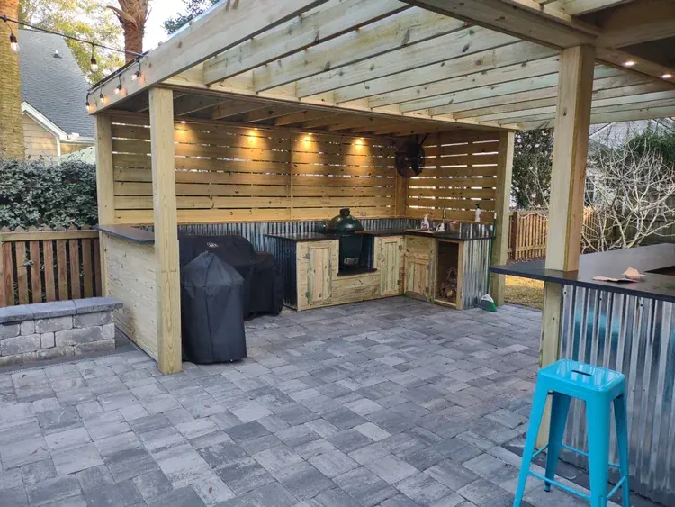
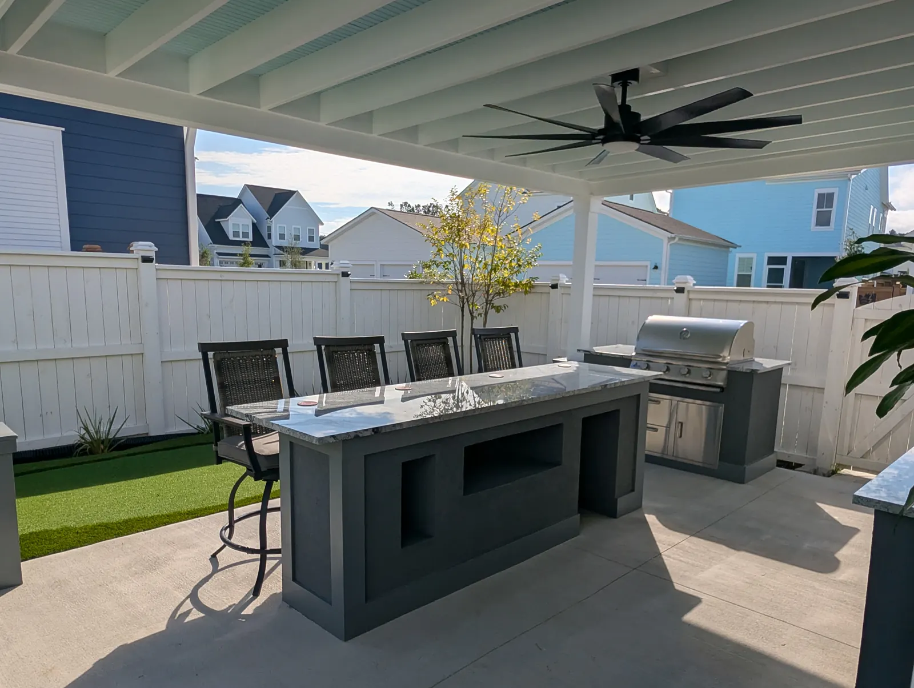

Building an Outdoor Kitchen That Works in Charleston

Not a Grill With Cabinets Around It
An outdoor kitchen is not a grill with cabinets around it. It is a working kitchen that lives outdoors in Charleston humidity and salt air, and the decisions that matter are mostly about how you cook and what survives out here.

Start With How You Cook
Most of our kitchens start with a grill, a counter and storage, and grow from there. What people add depends entirely on how they actually cook: a Big Green Egg beside the grill, a second fridge, a sink so the prep does not happen inside, drawers instead of doors under the counter.
The most involved one we have built is a U-shaped kitchen with a grill and hood, a Big Green Egg, two fridges — one with drawers — a sink, cabinets, custom lighting and a bar top with a sapele foot rail.
We install Blaze appliances and we do not mark them up.
The Details That Matter Later
- A range hood is worth it. We prefer to fit one. Where that is not possible, a ceiling fan plus an extra fan does the job — which is what we did on the Summerville pergola kitchen.
- Granite and stainless hold up out here. The finish around them can be stone, brick, stucco, shiplap or wood, or microcement and lime plaster for a smooth modern face.
- Think about where guests stand. A bar top keeps people out of the cook's way and is the difference between a kitchen people gather at and one they watch from a distance.
Most of our outdoor kitchens run $8,000 to $20,000 or more, with appliances usually the largest single part of that.

Build It Into the Space, Not Onto It
A kitchen designed with the structure and the patio reads as part of the house. One added afterwards reads as furniture. If a pergola or pavilion is going up, that is the moment to run the gas, water and electrical — all handled by our own crews, along with the permits.
For the full picture, see our outdoor kitchens page.
Frequently Asked Questions
How much does an outdoor kitchen cost in Charleston?
Most of ours run $8,000 to $20,000 or more. Appliances are usually the biggest part of the cost, and we install Blaze appliances without marking them up.
Do I need a range hood on an outdoor kitchen?
We prefer to fit one. Where that is not possible, a ceiling fan plus an extra fan works, which is what we did on the Summerville pergola kitchen.
What materials hold up for an outdoor kitchen on the coast?
Granite counters and stainless appliances. The surround can be stone, brick, stucco, shiplap or wood, or microcement and specialized lime plasters for a smooth modern finish.
Should the kitchen go under a structure?
It is much better designed together with the pergola or pavilion and the patio, because the gas, water and electrical can be run before anything is paved or framed.
Planning a Project of Your Own?
See everything we design and build, or get in touch to talk through your ideas with Doug and Zach.